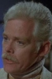

Country:United States, 92 minutes
Spoken languages:English
Genres:Horror
Director(s):Jeff Lieberman
Writer(s):Jeff Lieberman
Video Codec:Unknown
Number: 3010


Certification:R
Storyline:
A violent electrical storm topples power lines into the rain soaked earth that is home for an aggressive breed of worms.\r The high voltage causes the worms to mutate into larger, hostile hordes of man-eating worms that lie in wait for the residents of Fly Creek.
Cast: 


Medium: Bluray,
Loaned: No
Aspect ratio: Unknown